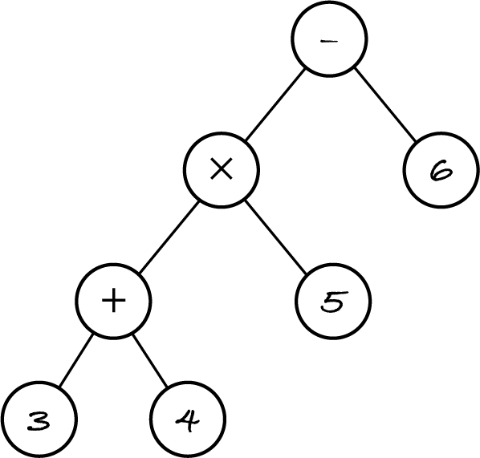

16.3. Traversals
To do a brute-force search over a binary tree we must traverse it to visit all its nodes. The traversal generates the candidates and visiting a node does the testing, i.e. checks if it satisfies the search criteria.
Traversals can be used for non-search problems too, e.g. to print the tree. Visiting a node processes its item and what is done depends on the problem, e.g. the size operation process a node by adding one to count.
There are several systematic ways of traversing a binary tree. Once again I’ll use the tree for expression (3+4)×5−6 to illustrate the concepts.
[1]:
%run -i ../m269_tree
# MTP is short for minus, times, plus
MTP = join("-", join("*", join("+", THREE, FOUR), FIVE), SIX)
16.3.1. Depth-first search
Traversals can be classified according to whether the root is visited before, in between or after visiting the subtrees.
A pre-order traversal first visits the root, then the left subtree, then the right subtree. For the example tree, it would visit nodes −, ×, +, 3, 4, 5, 6 in that order.
An in-order traversal first visits the left subtree, then the root, then the right subtree. For the example tree, the visiting order is 3, +, 4, ×, 5, −, 6. The in-order traversal generates the usual infix notation of expressions (operator between operands) but without the brackets.
A post-order traversal first visits the left subtree, then the right subtree and finally the root. For the example tree, the visiting order is 3, 4, +, 5, ×, 6, −. This is the postfix notation that can be evaluated with a stack.
All these traversals are forms of depth-first search (DFS), a search that explores one subtree in depth before searching the other subtree.
16.3.2. Pre-order traversal
The algorithmic pattern for preorder(tree) is as follows, where step 2 is problem-dependent.
if tree is empty:
stop
visit root(tree)
preorder(left(tree))
preorder(right(tree))
A pre-order traversal can be used to print a tree. In this case, step 2 prints the root’s value.
[2]:
# this code is also in m269_tree.py
def write(tree: Tree, level: int) -> None:
"""Print the tree as in file browsers, with subtrees indented.
Preconditions: level >= 0 is the initial indentation level
"""
if is_empty(tree):
print(" " * 4 * level, "EMPTY")
else:
print(" " * 4 * level, tree.root)
write(tree.left, level + 1)
write(tree.right, level + 1)
[3]:
write(MTP, 0) # compare the output to the figure above
-
*
+
3
EMPTY
EMPTY
4
EMPTY
EMPTY
5
EMPTY
EMPTY
6
EMPTY
EMPTY
The pre-order pattern may be modified for some problems. For example, when searching for an item in a tree, we can stop the traversal when we find it.
[4]:
def has(tree: Tree, item: object) -> bool:
"""Return True if and only if the item occurs in the tree."""
if is_empty(tree):
return False
if tree.root == item: # visit a node
return True
return has(tree.left, item) or has(tree.right, item)
has(MTP, 9)
[4]:
False
This is similar to the recursive membership operation on sequences, which has two analogous base cases: the empty sequence and the head is the sought item.
The code uses short-circuit disjunction to search the right subtree only if the item isn’t in the left subtree. In languages without short-circuiting we’d write:
if has(tree.left, item):
return True
return has(tree.right, item)
Exhaustive search algorithms on trees usually do a pre-order traversal because by first looking at the root they may avoid visiting the subtrees.
16.3.3. In-order traversal
Other than the name of the recursive function, what do we need to change in the pre-order pattern to obtain in-order traversal?
We just need to swap steps 2 and 3 to visit the left subtree before the root.
A plain in-order traversal of an expression tree produces the expression in infix notation but without the parentheses. This is wrong because the original expression (3+4)×5−6 becomes 3+4×5−6 which, according to the usual precedence of operators, means 3+(4×5)−6. We have to print each subtree within brackets.
[5]:
def infix(expression: Tree) -> None:
"""Print infix form of expression, with full brackets."""
if is_empty(expression):
return
print("(", end="") # print nothing after (
infix(expression.left)
print(" ", expression.root, " ", end="")
infix(expression.right)
print(")", end="")
infix(MTP)
(((( 3 ) + ( 4 )) * ( 5 )) - ( 6 ))
When the print function has argument end=s, it prints string s instead of the newline character.
Exercise 16.3.1
Here’s the function again with some more tests. Change it so that brackets around integer literals aren’t printed.
[6]:
def infix(expression: Tree) -> None:
"""Print infix form of expression, with full brackets."""
if is_empty(expression):
return
print("(", end="")
infix(expression.left)
print(" ", expression.root, " ", end="")
infix(expression.right)
print(")", end="")
infix(MTP) # ((3+4)*5)–6
print()
infix(TPM) # (3+4)*(5-6)
print()
infix(PMT) # 3+((4*5)-6)
print()
infix(MPT) # (3+(4*5))-6
16.3.4. Post-order traversal
Other than the name of the recursive function, what do we need to change to the pre-order pattern to obtain post-order traversal?
We must move step 2 (visit the root) to the end of the algorithm, after visiting the right subtree.
We can evaluate an expression tree with a post-order traversal, because we can only process an operator after evaluating the left and right operands. The base case isn’t the empty tree as that has no defined value; it’s a leaf (a literal).
[7]:
def evaluate(expression: Tree) -> int:
"""Return the value of the expression tree.
Preconditions:
- expression isn't empty
- expression only has operators +, -, * and numeric operands
"""
if is_leaf(expression):
return expression.root
left_value = evaluate(expression.left)
right_value = evaluate(expression.right)
operator = expression.root
if operator == "+":
return left_value + right_value
if operator == "-":
return left_value - right_value
if operator == "*":
return left_value * right_value
infix(MTP) # ((3+4)*5)–6
print(" =", evaluate(MTP))
infix(TPM) # (3+4)*(5-6)
print(" =", evaluate(TPM))
infix(PMT) # 3+((4*5)-6)
print(" =", evaluate(PMT))
infix(MPT) # (3+(4*5))-6
print(" =", evaluate(MPT))
(((( 3 ) + ( 4 )) * ( 5 )) - ( 6 )) = 29
((( 3 ) + ( 4 )) * (( 5 ) - ( 6 ))) = -7
(( 3 ) + ((( 4 ) * ( 5 )) - ( 6 ))) = 17
((( 3 ) + (( 4 ) * ( 5 ))) - ( 6 )) = 17
If you run this cell after doing the previous exercise you get fewer brackets.
16.3.5. Breadth-first search
A level-order traversal goes through the tree level by level, from left to right within each level. This is a form of breadth-first search (BFS) because it goes through the breadth of each level before moving down to the next one.
Depth-first search uses the call stack of the interpreter for the recursive calls; breath-first search uses a queue. When we visit a node, we enqueue its children, i.e. the next level, to visit them later. As we visit each level from left to right and enqueue its children, the next level will also be traversed left to right. The front of the queue is the next node to be visited. When we reach a leaf, no children are enqueued. At some point the queue will be empty and the algorithm stops. Here’s the BFS pattern:
let to visit be the empty queue
enqueue tree in to visit
while to visit isn’t empty:
dequeue tree from to visit
visit root(tree)
if left(tree) isn’t empty:
enqueue left(tree) in to visit
if right(tree) isn’t empty:
enqueue right(tree) in to visit
Here’s a version of level-order traversal that prints one level per line. It uses two queues, one for the current level and the other for the next level, to detect when the current level ends and print a newline.
[8]:
%run -i ../m269_queue
def levels(tree: Tree) -> None:
"""Print the tree from the root down, one level per line."""
this_level = Queue()
next_level = Queue()
this_level.enqueue(tree)
while this_level.size() > 0:
tree = this_level.dequeue()
print(tree.root, " ", end="")
if not is_empty(tree.left):
next_level.enqueue(tree.left)
if not is_empty(tree.right):
next_level.enqueue(tree.right)
# if it was last tree of this level, start new line and level
if this_level.size() == 0:
print()
this_level = next_level
next_level = Queue()
levels(MTP) # (3+4) * 5 - 6
-
* 6
+ 5
3 4
[9]:
levels(TPM) # (3+4) * (5-6)
*
+ -
3 4 5 6